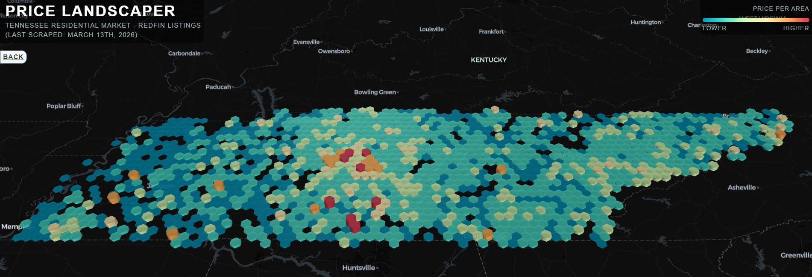

Price Landscaper
Price Landscaper began as a project for my software engineering class, but it was driven by a simple goal, to help first-time homebuyers get an intuitive feel for the housing market in their region.
Traditional real estate platforms like Redfin and Zillow are excellent tools for searching individual listings, but they don't communicate the shape of a market. I wanted to build something that would let a homebuyer look at an entire state and immediately understand where prices were high, where they were affordable, and how neighborhoods compared to each other geographically.
So meet... Price Landscaper!
Interactive Price Landscaper Demo
The result is a tool that starts with the big picture and lets you drill down from a bird's eye view of an entire state's price landscape, through neighborhood level clusters, all the way to individual listings with photos, prices, and square footage, each linking directly to their Redfin page.
View the source code on GitHub.
Technologies Used
Python
Python serves as the backbone of Price Landscaper's data pipeline. It orchestrates the entire scraping process from start to finish, handling everything from HTTP requests to statistical filtering of the final dataset, using a multitude of modules to do so.
Requests is a Python library used to make HTTP calls to Redfin's website, replicating the same network requests a browser would make when visiting a listing page. It fetches the raw HTML content that the scraper then processes.
BeautifulSoup is a Python HTML parsing library that navigates the raw HTML fetched by Requests and extracts the structured data embedded within it. Price Landscaper uses it specifically to locate and extract application/ld+json script tags, which contain Redfin's structured listing data.
NumPy is a Python numerical computing library used in Price Landscaper's data cleaning step. It calculates the mean and standard deviation of listing prices across the dataset and removes statistical outliers, specifically any listings whose prices fall outside two standard deviations from the mean, ensuring the visualization isn't distorted by anomalous data points.
ThreadPoolExecutor is part of Python's standard library and enables parallel execution of tasks. Price Landscaper uses it to scrape multiple individual listing pages simultaneously rather than one at a time, significantly reducing the total time required to build the dataset.
JSON
Since Redfin embeds listing data including price, coordinates, square footage, and images in this format on every listing page, Price Landscaper's scraper leverages its JSON as a data source without requiring a traditional API.
JSON serves as Price Landscaper's data storage format. Rather than using a database or backend server, the entire dataset of scraped listings is stored as a single flat JSON file that the frontend loads directly. This keeps the architecture simple and means Price Landscaper can be deployed as a fully static website with no server infrastructure required.
(As you can experience above!)
HTML, CSS, and JavaScript
HTML, CSS, and JavaScript form the frontend of Price Landscaper. The entire interface is built in vanilla JavaScript without any frontend framework, keeping the codebase simple and deployable anywhere without a build process. JavaScript's native Fetch API loads the listings dataset asynchronously, and standard DOM manipulation drives the sidebar listing panel and user interactions.
deck.gl
deck.gl is an open source WebGL-powered geospatial visualization framework originally developed by Uber's engineering team. Rather than using the browser's standard 2D drawing APIs, deck.gl communicates directly with the computer's GPU through WebGL, enabling smooth rendering of thousands of 3D geographic objects in the browser. Price Landscaper uses two deck.gl layers — the HexagonLayer, which aggregates listings into a hexagonal grid and renders each hexagon as a 3D column whose height and color represent the average price of listings in that area, and the ScatterplotLayer, which renders individual listing coordinates as color-coded dots when the user zooms in. The crossfade transition between these two layers as the user zooms is driven by deck.gl's onViewStateChange event, which fires continuously as the camera moves.
MapLibre GL
MapLibre GL is an open source map rendering library that provides the geographic base map underneath the deck.gl visualization. It renders the street map, city labels, and terrain context that gives the price columns their geographic meaning. Price Landscaper uses CartoDB's free dark basemap style, which provides a visually clean dark background that makes the colorful price columns stand out clearly.